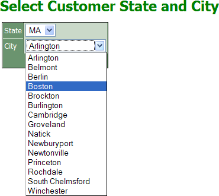

Using a Dialog as a Search Form
Assume you have a grid that shows all the records of a table, such as the following.

If you wanted to search for all of the customers in a specified city and state, you could add a search part to the grid. The following search part has two drop down list boxes that display the unique field values from the state and city fields.
Unfortunately, there is no way for the search part to display only valid city entries for the specified state. A solution is to use a dialog component on a different page as a search form.

Putting it Together
Add an advanced button to the page containing the grid. This button will open the page that contains the dialog search form.
The page that contains the dialog search form is named customer_filter.a5w. The form is named filt. The modifications to the form and button code is as follows.
|
<form method=post name="filt"
action="customer_filter.a5w"
><button id=button_adv1 name=button_adv1
on face=Verdana color=#008000>Search</font></strong></button></form> |
The dialog component that is placed on customer_filter.a5w has two drop down list boxes. The state control is based on the bill_state_region field of the customer table. Its properties are as follows:
|
Property |
Value |
|
Control Settings > Control Type |
DropDownBox |
|
Define Choices > List Type |
Dynamic |
|
DropDownBox Properties > Choices > Data Source > Data source type |
DBF-Table |
|
DropDownBox Properties > Choices > Data Source > Table name |
customer |
|
DropDownBox Properties > Choices > Data Source > Display value field |
bill_state_region |
The city control is based on the bill_city field of the customer table. Its properties are as follows:
|
Property |
Value |
|
Control Settings > Control Type |
DropDownBox |
|
Define Choices > List Type |
Dynamic |
|
DropDownBox Properties > Choices > Data Source > Data source type |
DBF-Table |
|
DropDownBox Properties > Choices > Data Source > Table name |
customer |
|
DropDownBox Properties > Choices > Data Source > Display value field |
bill_city |
|
DropDownBox Properties > Choices > Data Source > Filter |
bill_state_region = ? |
Define the parameter mapping for bill_state_region on the Parameter Mapping tab of the Filter Expression dialog:
|
Property |
Value |
|
Parameter maps to a |
Variable |
|
Variable name |
State |
|
Parameter type |
character |
Select the Form > Properties page of the menus.
In the Server Events > AfterValidate field click
 to display
the Form Events dialog. Enter the following
code and click OK. In this case the name of
the grid component on the customers.a5w page
is cust.
to display
the Form Events dialog. Enter the following
code and click OK. In this case the name of
the grid component on the customers.a5w page
is cust.
 Note : The expression
placed into the filter variable has to be a valid
expression for the database you are using.
Note : The expression
placed into the filter variable has to be a valid
expression for the database you are using.
Code for an Alpha Five table.
|
dim filter as C filter = "bill_state_region = " + quote(state) + " .and. bill_city = " + quote(city) filter = urlencode(filter) currentform.redirecttarget = "customers.a5w?cust_filter=" + filter |
Equivalent code for a SQL database.
|
dim filter as C filter = "customer.bill_state_region = '" + state + "' and customer.bill_city = '" + city + "'" filter = urlencode(filter) currentform.redirecttarget = "customers.a5w?cust_filter=" + filter |
Finally, you need a second button to clear any search filter that you have imposed on the customers.a5w page. Create a second advanced button (as described in steps 1 and 2), name it clear, and modify its <form> and <button> code as follows. The filter expression indicates that all records are to be displayed.
|
<form method=post name="clear"
action="customers.a5w?cust_filter=.t." ><button
id=button_adv1 on Search</font></strong></button></form> |
Running the Pages
The initial view of the customers.a5w page is as follows.
After clicking Search and entering values into the search form, you see the following.
After clicking Submit, the filtered customers.a5w page reappears.
See Also
Contents, Calling a Filtered Grid Component, Opening a Page with an Advanced Button